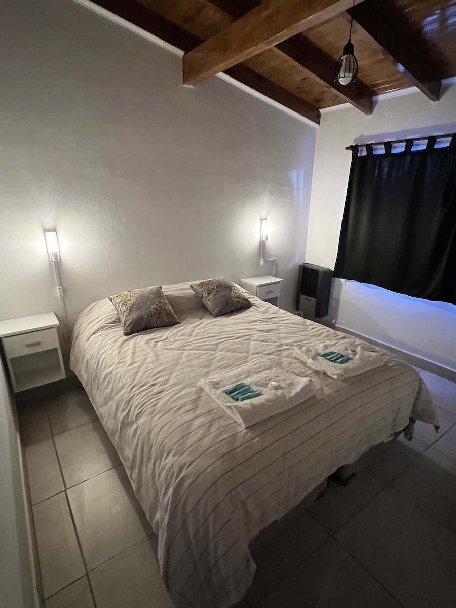
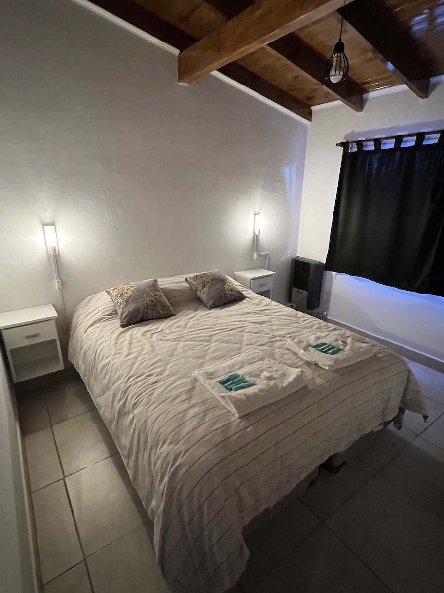

Hemos preparado estas propiedades con todo lo necesario para que nuestros pasajeros no tengan que preocuparse de ningún detalle. Están equipadas con vajilla y cubiertos de excelente calidad. Se provee ropa de cama, frazadas, toallas y toallones, secador de pelo, jabón, shampoo y acondicionador. Para los meses mas fríos, la calefacción a gas natural permite que sean lugares cálidos y confortables, sin importar la temperatura externa. Cuentan con fogones con parrilla para los asados, con la vista perfecta de las montañas. Estacionamiento interno para los vehículos. WiFi y DirecTV completan las comodidades del lugar. Adicionalmente trabajamos con criterios de Sostenibilidad certificados por el Ministerio de Turismo de la Nación, contando por ello con señalética apropiada, separación de residuos, filtro de agua (para que nuestros pasajeros no tengan que comprar botellas de agua descapotables) y todo lo necesario para colaborar activamente con el cuidado de nuestro entorno.


 
